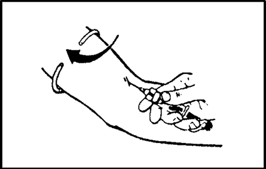
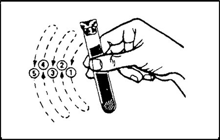
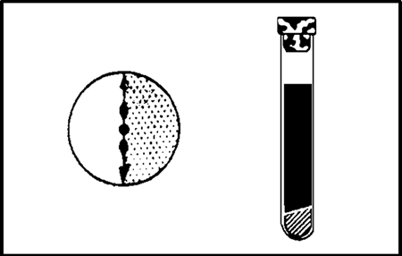
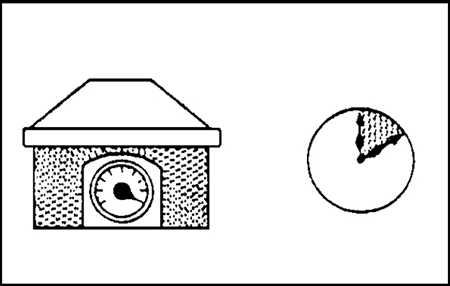
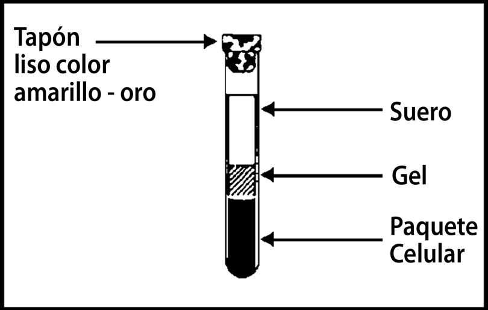

Tubo sst (gel) marca bd vacutainer®
Tubo al vacío con gel separador de suero para recolección de sangre
DESCRIPCIÓN: TUBO SST o SST II (tubo separador de suero) es una presentación marca BD VACUTAINER® específica para aquellas muestras que requieran suero.
INSTRUCCIONES DE USO:
TUBO SST o SST II
1. Recolecte su muestra de sangre usando la metodología tradicional del SISTEMA BD VACUTAINER®.

2. Suavemente invierta el TUBO SST o SST II de 5 a 6 veces para provocar la mezcla con los activadores al mecanismo de la coagulación.

3. Permita que la muestra de sangre se coagule completamente (tiempo recomendado de coagulación: 30 minutos).

4. Centrifugue a 1,000 G por 10 minutos [(G = 1.12 × 10-5 × r × (rpm)2].

5. El tubo puede ser centrifugado con su tapón puesto ya que es hemo-repelente. Remueva el tubo de la centrífuga, la barrera ya ha sido formada y el suero está listo para ser usado.

6. La muestra en el TUBO SST o SST II está lista para ser transportada al laboratorio para su análisis.
DATOS COMPLEMENTARIOS: Para mayor información sobre asesoría técnica llamar a:
BECTON DICKINSON DE MÉXICO, S. A. de C. V.
Teléfono: (55) 5999-8200.
Directo: (55) 5999-8360.
® Marca registrada
www.bd.com/mx